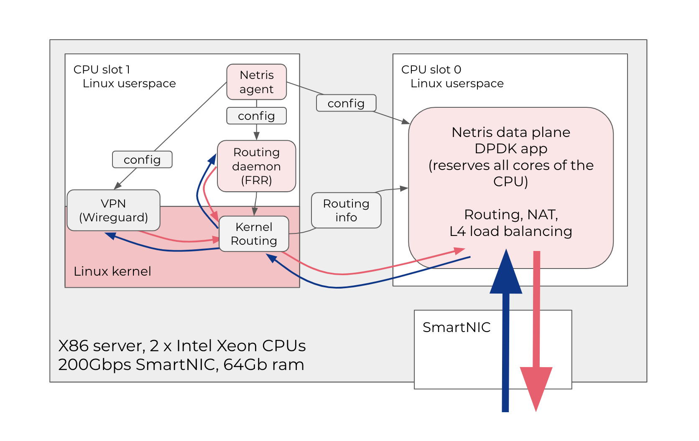

Concepts¶
Introduction to Netris¶
Netris is an automatic netops software for operating physical networks like it is a cloud. Netris automatically configures switching, routing, load-balancing, and network security based on user-defined services and policies. Netris continuously monitors the network’s health and either apply software remediation or informs you of necessary actions if human intervention is required. Netris abstracts away the complexities of detailed network configuration, letting you perform efficiently by operating your physical network in a top down approach like a cloud – instead of the legacy box by box operation.
What is Netris Controller¶
Netris Controller is the main operations control center for engineers using GUI/RestAPI/Kubernetes, systems, and network devices. Netris Controller stores the data representing the user-defined network services and policies, health, statistics, analytics received from the network devices, and information from integration modules with external systems (Kubernetes). Netris Controller can run as a VM or container, on/off-prem, or in Netris cloud.
Diagram: High level Netris architecture.

Controller HA. We highly recommend running more than one copy of the controller for database replication.
Multiple sites. Netris is designed to operate multiple sites with just a single controller with HA.
What if the controller is unreachable. Netris operated switches/routers can tolerate the unreachability of the Netris Controller. Changes and stats collection will be unavailable during the controller unavailability window; however, switches/routers’ core operation will not be affected.
Netris Switch Agent¶
Netris Switch Agent is software running in the user space of the network operating system (NOS) of the switch and is responsible for automatically generating the particular switch configuration according to service requirements and policies defined in the Netris Controller. Netris Switch Agent uses an encrypted GRPC protocol for secure communication with the Netris Controller accessible through a local management network or over the Internet.
Netris SoftGate¶
Netris SoftGate is automatic configuration software and reference architecture for enabling border routing, Layer-4 Load Balancing, Network Address Translation (NAT), and site-to-site VPN function on a regular x86 server with a SmartNIC card.
Netris SoftGate supports a high-performance DPDK data plane running in the user-space. It configures the system so that packets entering the NIC (network interface card) bypass Linux Kernel and go directly to the user space application. So traffic from the NIC travels through the PCIe bus to the closest CPU’s last level cache and then into one of 8 cores, all reserved for the data-plane application. DPDK data-plane software processes the traffic for routing, load-balancing, NAT and makes necessary changes in the packet header (rewrites mac/VLAN-id) then returns the packet to the NIC, which sends it further into the switch for traveling further in Layer-2.
The server has to have 2 x Intel CPUs (8+ cores each). One CPU (closest to the SmartNIC card) is reserved for the data-plane process only (OS will report 100% CPU usage). Another CPU is used for running Linux OS, routing control plane (FRR), Netris agent, and other standard Linux utilities.
Netris agents can also configure Wireguard to form full mesh VPN tunnels between customer sites and then run necessary dynamic routing. So, servers and applications in multiple data centers can communicate over the Internet using encrypted tunnels.
Diagram: Netris SoftGate high level architecture
